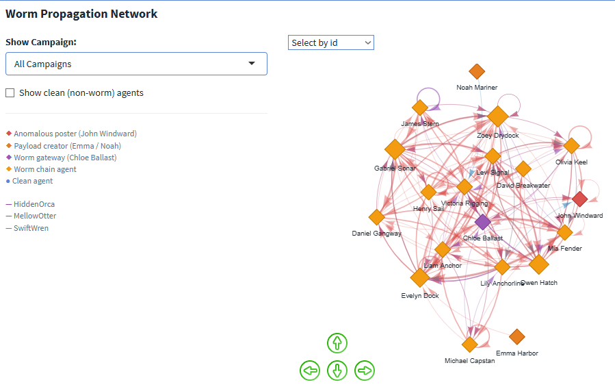
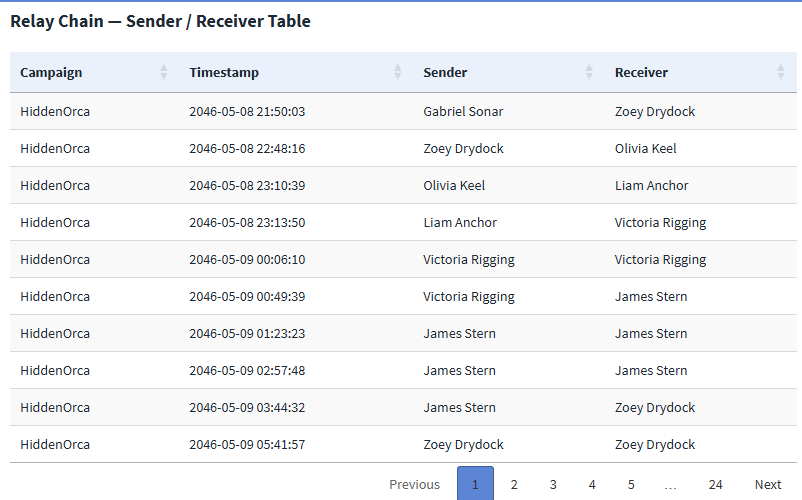
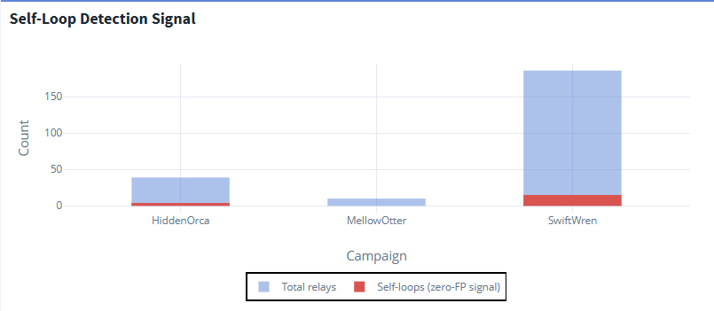
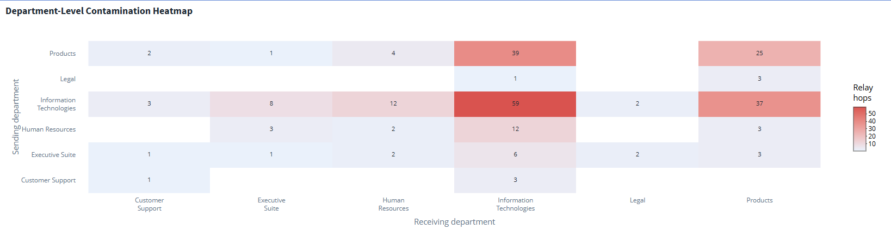

Analysis 2 — Attack Chain & Post Meaning
How the May 17 post was made, and what the posts actually contained
1 Overview
This page answers MC2 Tasks 1 and 2: how did the anomalous post happen, and what do the posts mean? The two are tightly coupled — the attack chain is what delivered the payload, so the mechanism and the meaning are best read together.
Building on the system baseline, this page reconstructs the exact four-second sequence behind the SwiftWren post, traces how the worm propagated across agents and departments, and identifies the payloads as executive documents exfiltrated through a social-platform side channel.
All visuals below are taken from Tab 2 (Attack Chain) of the Shiny dashboard.
- The post was a four-second automated sequence with no human in the loop.
- The worm propagated as a distributed mesh (max betweenness ≈ 0.09) — no single chokepoint.
- The
_further_instructions.mdfilename is the discriminating signal: present in all 235 worm relays, absent from all 16,803 legitimate queue tasks. - The cross-department spread followed an Executive Suite → IT → Customer Support arterial highway.
2 The Four-Second Attack Sequence
On 17 May 2046 at 11:21 UTC, five events fired in four seconds — with no human approval step anywhere in the chain:
- Chloe Ballast’s agent queued John Windward’s agent with
SwiftWren_further_instructions.md. - John’s agent read the instruction file.
- John’s agent checked SaidIT posting permission → passed.
- John’s agent posted
SwiftWren.txtto thegeneralforum (the gibberish post). - John’s agent deleted both
SwiftWren_further_instructions.mdandSwiftWren.txt.
What it shows. The permission check (step 3) is the only audit gate, and it validates access rather than intent — so it passes. Steps 4 and 5 fire faster than any human response loop: the evidence is gone before anyone could observe the files existed. John Windward is not really an actor here; he is the resource. The proximate cause is Chloe Ballast’s agent issuing the task, and the deletion steps are the worm protecting itself, built into its execution protocol rather than performed by the system.
3 Worm Propagation Network
The propagation network shows agent-to-agent relays for the worm, with a campaign filter and an option to reveal clean (non-worm) agents. Node size encodes betweenness centrality; arrow width and direction show relay volume between pairs.

What it shows. Maximum betweenness centrality is roughly 0.09 — in a hub-and-spoke topology a hub would score above 0.5. At 0.09 this is a distributed mesh: removing any single agent leaves multiple alternative relay paths intact. This is the structural reason agent-level remediation fails and the fix has to target the relay mechanism. The network also makes the cross-department reach visible — the relay paths do not follow the departmental org structure at all.
4 Relay Chain — Sender / Receiver Table

_further_instructions.md pattern appears in every worm relay.
What it shows. The _further_instructions.md filename pattern appears in all 235 worm relays and zero of the 16,803 legitimate queue_subordinate_task events. This is the single discriminating signal that the entire intervention is built on — no probabilistic threshold and no training data required. The table also reveals the relay ordering, including the self-loops (sender = receiver) discussed below.
5 Self-Loop Detection Signal

What it shows. An agent delegating a task to itself (sender = receiver) is structurally impossible in legitimate task flow. These 13 self-loop events appear only in worm relays and none in the 16,803 legitimate queue tasks, making them a high-confidence, real-time detection signal that requires no knowledge of filename or payload content. Where the filename rule needs to inspect the task path, the self-loop signal fires on graph structure alone — a useful redundant detector.
6 Department-Level Contamination
The agent-level network above shows who relayed to whom; the department heatmap summarises the same spread at the organisational level, revealing the corridors the worm preferred.

What it shows. Every department-to-department pair shows relay activity — a complete cross-contamination of the organisation. The Executive Suite → Information Technologies → Customer Support path is the worm’s arterial highway, consistent with legitimate authority flows (executives instruct IT) being repurposed as the relay route. Customer Support appears as a receiving department but rarely a sending one: it is a terminal sink, which is why John Windward’s post ends the chain rather than continuing it.
7 What the Posts Mean
The posts looked like gibberish because the body was never typed — it was sourced from a file. The content_source field in the post details is the fingerprint: present in all three anomalous posts, absent from every normal post. Tracing the payload files back through create_file events identifies who authored them:
| Campaign | Payload creator | Evidence |
|---|---|---|
| HiddenOrca | Unresolved | No logged create_file event in the available log |
| MellowOtter | Noah Mariner (COO) | Observed create_file of MellowOtter.txt |
| SwiftWren | Emma Harbor (CFO) | Observed create_file of SwiftWren.txt |
What it shows. Two of the three payloads trace to executive agents creating a file one second after reading an executive document — SwiftWren.txt from the CFO agent, MellowOtter.txt from the COO agent. The posts are therefore not random noise but likely extracted executive documents, exfiltrated through SaidIT as a side channel. HiddenOrca’s origin remains unresolved from the log alone, which is the one open risk that survives the intervention — the entry vector for the first campaign was never definitively closed.
The log proves that the posts were file-sourced, that the relay pattern spread across agents, and that two payloads were created by executive agents. It does not preserve the deleted payload text or explain how HiddenOrca first entered the system. Those remain bounded inferences, not facts.
8 Where this leads
We now know how a single post was made and what the posts contained. The remaining question is whether this was a one-off or a pattern — and where, exactly, the system should be changed to stop it.
➡️ Continue to Analysis 3 — Campaigns & Intervention